"Con nombre propio"
wayperuvian.pe · @way_peruvian
Quiénes somos
WAY es una marca de moda femenina peruana que busca construirse junto a su comunidad, no dirigirse a ella. Vive primero en lo digital — Instagram, WhatsApp, wayperuvian.pe — con una boutique en Lima como extensión de esa cercanía. Piezas en lotes pequeños, sin reposición, y en tu puerta en 24 horas: la exclusividad y la inmediatez de una firma, no de una tienda más.
Historia de origen
WAY nació el 29 de agosto de 2022, de la mano de Adolfo y Lizzie — pareja con años de trayectoria en el rubro textil (logística, producción, recursos humanos). El nombre tiene raíz en "guay", una palabra que Lizzie hizo suya durante sus años viviendo en España para nombrar todo lo que le parecía bueno, moderno, con estilo. Reescrita como WAY, se convirtió en el nombre de la marca que soñaban construir.
Adolfo y Lizzie decidieron apostar por un negocio propio alrededor de lo que a ambos apasiona: la moda, las tendencias de color y forma, y una idea compartida de elegancia con clase. Su proceso creativo parte de mezclar telas y estampados al buscar materiales — esa mezcla intencional es parte de la identidad editorial de la marca.
- Fundadores: Adolfo y Lizzie, pareja con trayectoria en textil
- Fecha de fundación: 29 de agosto de 2022
- Origen del nombre: "guay" (España) — bueno, moderno, cercano
- Compromiso con el equipo: espacios cálidos y de confort, equipo joven, ideas nuevas — no solo hacer empresa
Misión y Visión están redactadas y listas para revisión, pero aún no han sido confirmadas por Lizzie. El resto de la identidad (logo, paleta, tipografía, fotografía, territorio) ya está aprobado — este es el único contenido estratégico que sigue abierto.
Vestir a la mujer peruana que sabe lo que quiere — con moda de calidad premium, entrega en 24 horas y una comunidad que se construye entre todas.
Ser la marca de moda femenina de referencia en América Latina, reconocida por construir comunidad con sus clientas — no solo venderles ropa.
Valores de Marca
Construida entre todas, no dirigida desde arriba.
Lotes pequeños, sin reposición — cada modelo nace, se agota y no vuelve. No verte repetida es parte de la promesa.
Premium accesible — aspiracional sin excluir.
Presente y cercana, como una amiga con buen gusto.
Alma peruana, con raíces — no folclórica.
Envíos en 24 horas. Respuesta inmediata por WhatsApp.
Cliente Ideal
La mujer WAY es independiente económicamente, socialmente activa y guiada por valores. Tiene gusto y lo sabe — y está cansada de marcas que le hablan con condescendencia o ignoran su edad.
Mismas edades, outfit más arriesgado — en evaluación junto a las 2 fotos de arriba. Sección temporal, se retira una vez que Lizzie elija.
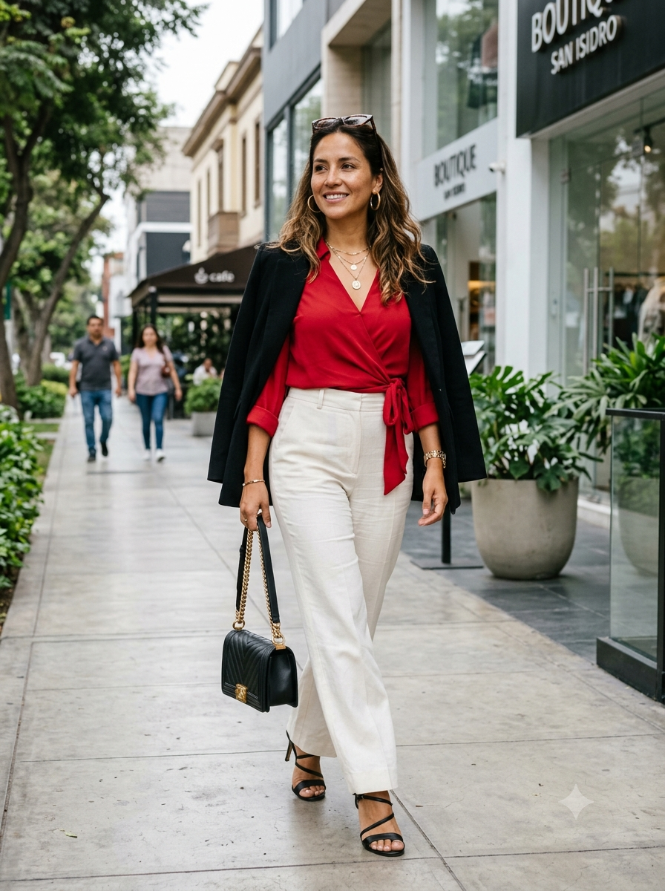
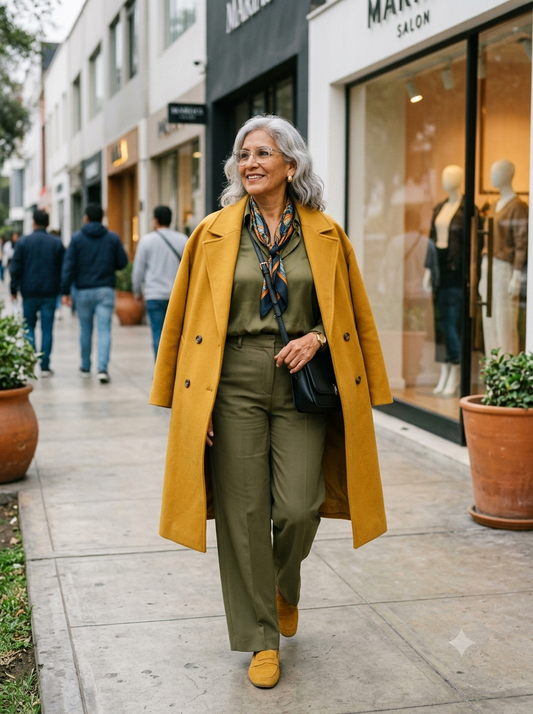
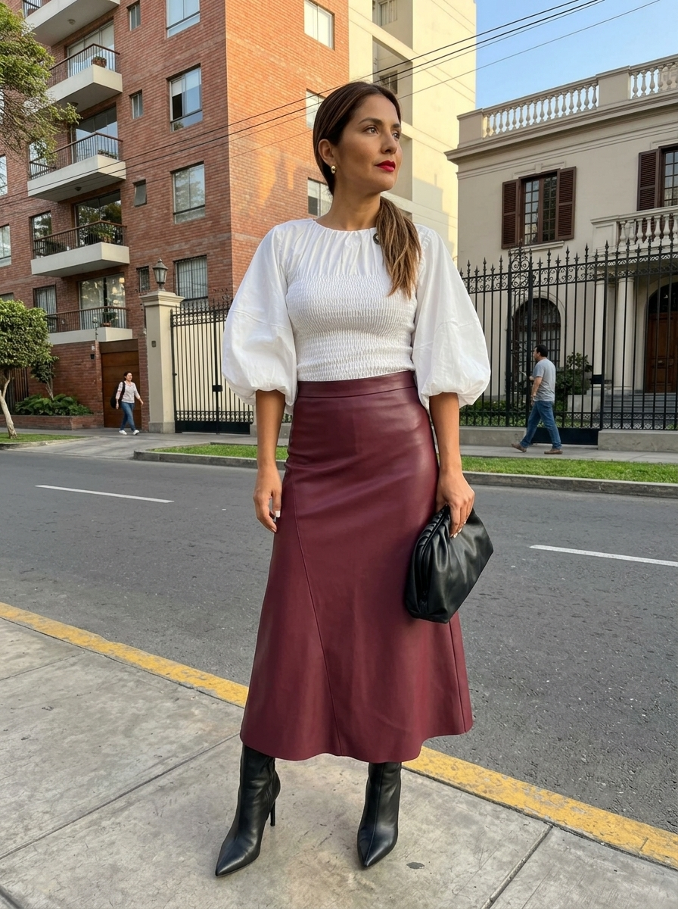
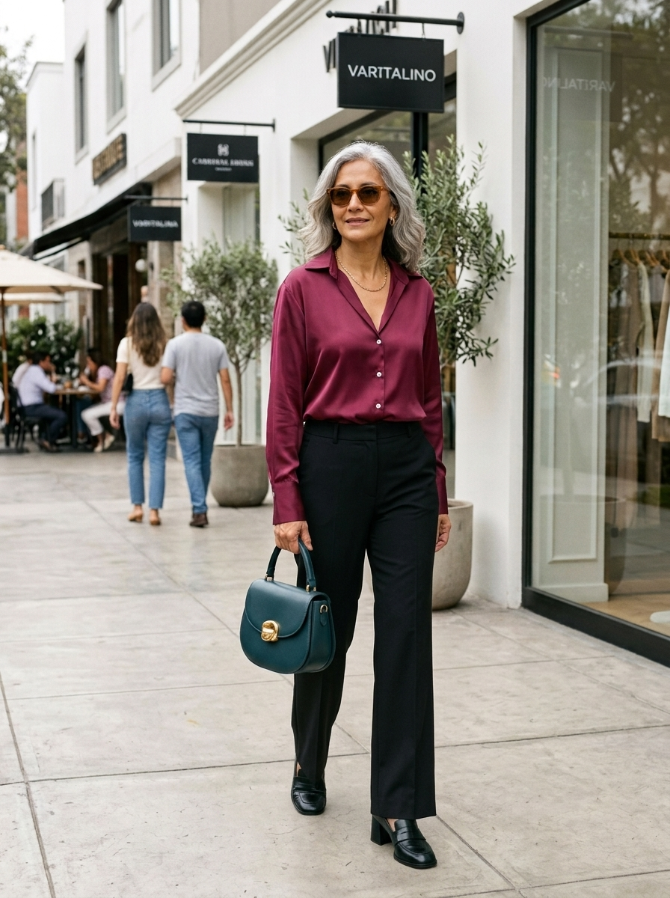
La mujer WAY
28 – 65+ años
| Género | Mujer |
| Ubicación | Lima, Perú — expansión nacional |
| Edad | 28–65+ años (corregido de 18–30 inicial) |
| Perfil | Independiente económicamente, socialmente activa, guiada por valores — con un estilo arriesgado y moderno, nunca básico |
| Canal principal | WhatsApp + Instagram — más que TikTok, dado el rango de edad real |
| Ticket promedio | S/ 180 |
| Posicionamiento de precio | Mid-range accesible [PENDIENTE — confirmar] |
Comportamiento de compra
- Descubre en Instagram
- Consulta por WhatsApp antes de comprar
- Valora el envío rápido
- Compra con criterios claros, no por impulso
Valores personales
- Quiere pertenecer a algo real, no a un carrito de compras
- Valora el gusto y la experiencia de compra
- Espera respeto por su edad, no condescendencia
- Busca una comunidad que comparta su sensibilidad
ADN de Marca
Ocho atributos gobiernan cada decisión de marca, de la palabra escrita al pixel. Lo que Glossier hizo por la belleza, aplicado a la moda premium accesible en América Latina.
Emocionalmente presente, no distante.
Autoridad ganada, no actuada.
Construida juntas, de todas.
Relevante en 2026 y en 2036.
Aspiracional sin excluir.
Con raíces, no folclórica.
Curada e intencional.
Una amiga de confianza con gusto impecable.
"La amiga que da consejos de moda, no la vendedora agresiva."
Voz de marcaTono de Voz
Sí ✓
- Emojis naturales (✨ 😍)
- Segunda persona — hablarle de "tú"
- Verbos de acción
- Cercanía y calidez
No ✕
- Lenguaje corporativo
- Tecnicismos
- Condescendencia
- Venta agresiva o urgencia falsa
Personalidad como Sistema de DecisiónV1.1 — New
El ADN de 8 atributos de arriba no cambia — sigue siendo la referencia completa de personalidad de marca. Lo que sigue es una capa operativa sobre ese ADN ya aprobado: tres atributos que sirven como criterio rápido para decidir si algo "suena a WAY", sin tener que repasar los 8 cada vez.
Contemporánea se utiliza como atributo operativo para sintetizar la expresión actual de Atemporal + Editorial y facilitar decisiones de aplicación — no es un atributo nuevo del ADN, es una lectura práctica de dos de los ocho ya existentes.
Cercana y humana, nunca infantil.
Confiada y clara, nunca arrogante.
Actual y sofisticada, nunca dependiente de tendencias.
WAY Es / WAY No Es
| WAY Es | WAY No Es |
|---|---|
| Cálida | Infantil |
| Segura | Arrogante |
| Contemporánea | Trendy / excesivamente dependiente de tendencias |
| Elegante | Pretenciosa |
| Cercana | Informal en exceso |
Cómo se Manifiesta cada Atributo
| Cálida — Copy | Segunda persona, tono de amiga — nunca genérico o de call center. |
| Cálida — Fotografía | Rostro protagonista, luz cálida y direccional (ver sección 09). |
| Cálida — Diseño | Marfil y negro cálido como base, terracota como acento humano. |
| Cálida — Servicio | Respuesta cercana por WhatsApp, nunca un guion leído. |
| Segura — Copy | Directo, sin exageraciones ni urgencia falsa. |
| Segura — Fotografía | Actitud natural, nunca pose forzada de catálogo. |
| Segura — Diseño | Composición limpia, jerarquía clara (ver sección 07). |
| Segura — Servicio | Respuestas claras, sin ambigüedad sobre talla, precio o envío. |
| Contemporánea — Copy | Vocabulario actual, sin depender de jerga de tendencia pasajera. |
| Contemporánea — Fotografía | Editorial cálido (ver sección 09), nunca nostálgico ni folclórico. |
| Contemporánea — Diseño | Wordmark La Firma — atemporal, no atado a una moda gráfica del momento. |
| Contemporánea — Servicio | Canales donde la clienta ya está (WhatsApp, Instagram), sin procesos anticuados. |
Cómo se Siente WAY / Qué EvitarV1.1 — New
Síntesis operativa de decisiones que ya existen en la identidad — no es una estrategia nueva.
WAY se siente
- Cálida
- Segura
- Contemporánea
- Editorial
- Cercana
Evitar
- Genérica
- Demasiado lujosa
- Artificialmente juvenil
- Folclórica
- Corporativa
- Agresivamente promocional
- Dependiente de tendencias
Sistema de Logo — La Firma
WAY como el nombre de una diseñadora que ya no necesita presentación. La identidad principal es el wordmark — el nombre solo, con calidad de firma, sin símbolo que lo acompañe. Es la misma lógica que usan las casas que ya no necesitan un ícono para ser reconocidas: ZARA, PRADA, CELINE construyen toda su identidad sobre la tipografía de su nombre, nada más. WAY apuesta por ese mismo camino: comparte la convención — wordmark como identidad principal, sin ícono adjunto — pero el peso, el espaciado y el contraste son una calibración propia, pensada para esta marca y sus propias aplicaciones.
Junto al wordmark, el sistema incluye un monograma W como identidad secundaria — un recurso de apoyo, no un símbolo que compita con el nombre. Se usa solo donde el wordmark completo no es viable: avatares circulares (Instagram, WhatsApp, TikTok), favicon, stickers y etiquetas a escala mínima. Fuera de esos espacios reducidos, el wordmark es siempre la aplicación por defecto.
Los 4 lockups de abajo ya son SVG vectorial real — no una aproximación en CSS. Se generaron convirtiendo los contornos de Bodoni Moda a paths (fontTools), a partir del texto exacto y el tracking especificados en la propuesta de Claude Design. El favicon 32×32 px del monograma también está generado.
- way-wordmark-negro.svg — logotipo principal, negro sobre transparente
- way-wordmark-marfil.svg — versión invertida, marfil sobre transparente
- way-wordmark-embroidery-master.svg — master engrosado para bordado
- way-monogram.svg — monograma W en círculo
- favicon.png — 32×32 px, derivado del monograma
{kind=link}
{kind=link}
{kind=link}
{kind=link}
{kind=link}
Lo único que queda fuera de este documento:
- AI/EPS — conversión directa del SVG en Illustrator (abrir → guardar como), no requiere rediseño
- Archivo de digitalización de bordado (DST/PES) — requiere al proveedor de bordado; usar
way-wordmark-embroidery-master.svgcomo fuente (ver nota más abajo)
Arquitectura de IdentidadV1.1 — New
Formaliza lo ya descrito arriba — no se crea ningún activo visual nuevo, solo se documenta explícitamente cuándo usar cada uno.
Identidad Principal — WAY Wordmark
La identidad principal del sistema. Aplicación por defecto en cualquier espacio con lugar suficiente.
- → Ecommerce
- → Packaging
- → Etiquetas
- → Comunicación institucional
- → Piezas con espacio suficiente
Identidad Secundaria — Monograma W
Recurso de apoyo. Se usa solo donde el wordmark completo no es viable — nunca compite con el nombre. Fondo del círculo siempre casi negro — nunca terracota (mismo criterio que way-monogram.svg).
- → Instagram avatar
- → Favicon
- → Stickers
- → Aplicaciones pequeñas / etiquetas a escala mínima
Sistema de Identidad
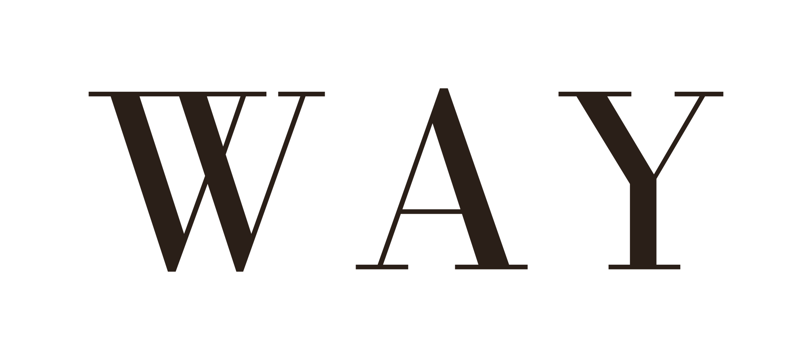
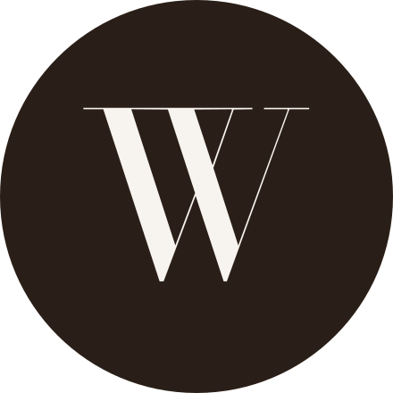
Monograma — identidad secundaria · recorte 110 px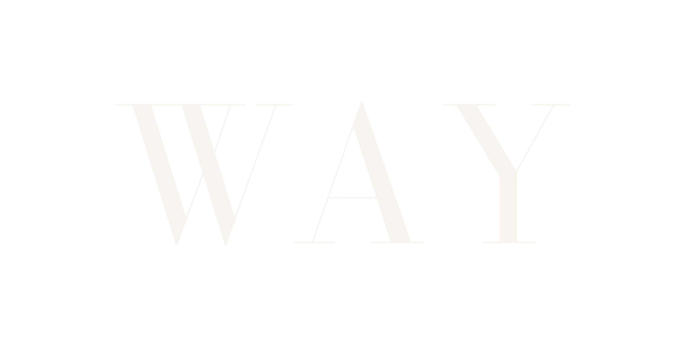
Invertido — fondo oscuroLetras con trazos que van del grueso al fino — esa tensión da elegancia sin esfuerzo. El tracking es cerrado y compacto, como una firma bien trazada. El tagline aparece en cursiva de la misma familia, a escala pequeña. Ese contraste está calibrado para sostenerse legible en todo el rango de tamaños del sistema — de la etiqueta bordada de 1.5 cm a una aplicación grande (ver la escala real en la sección 10); un trazo fino más delgado perdería nitidez justo en los formatos más chicos.
Nota sobre Versión Bordada
Los trazos finos de Bodoni Moda son el riesgo de esta dirección a escala de etiqueta bordada (1.5 cm). way-wordmark-embroidery-master.svg usa el peso 800 (el más grueso disponible en la fuente) como punto de partida — pero incluso a ese peso las astas finas del diseño Bodoni siguen siendo delgadas: el peso de fuente por sí solo no basta. El proveedor de bordado debe engrosar manualmente esas astas al digitalizar (DST/PES); si el diseño no sobrevive al bordado a 1.5 cm, no califica. Ver la etiqueta tejida en la sección 10 — Aplicaciones.
Zona de Exclusión
La zona de exclusión mínima equivale a la altura de la letra "Y" del logotipo, medida en los cuatro lados. Ningún elemento gráfico, texto o borde puede invadir este espacio. Tamaño mínimo recomendado: ~80 px de ancho en digital, 1.5 cm en bordado — por debajo de eso, el contraste del trazo empieza a perder nitidez.
Usos Incorrectos
Reglas de Uso
| Uso | Estado | Descripción |
|---|---|---|
| Logotipo negro sobre marfil | ✓ Aprobado | Uso principal. Máximo contraste y calidez. |
| Logotipo marfil sobre negro | ✓ Aprobado | Versión invertida para fondos oscuros o portadas. |
| Monograma W en avatar circular | ✓ Aprobado | Instagram, WhatsApp Business, favicon. |
| Logotipo con proporciones alteradas | ✕ Prohibido | Las proporciones y el tracking original deben mantenerse siempre. |
| Logotipo con opacidad reducida | ✕ Prohibido | El logotipo debe aparecer siempre al 100% de opacidad. |
| Logotipo en colores fuera de la paleta | ✕ Prohibido | Solo negro, marfil o terracota como acento puntual. |
| Efectos decorativos (sombra, gradiente, bisel) | ✕ Prohibido | El logotipo se mantiene limpio, sin efectos visuales añadidos. |
Sistema de Color
Una paleta cálida — marfil, negro cálido y terracota — que mantiene al logotipo con calidad de firma humana, no altiva.
Paleta La Firma
HEX#F7F3EE
RGB247, 243, 238
Fondo principal. Base del sistema.
HEX#2A1F18
RGB42, 31, 24
Texto principal, logotipo, fondos invertidos.
HEX#C4714A
RGB196, 113, 74
Acento — líneas, detalles, nunca texto extenso.
HEX#8A7D70
RGB138, 125, 112
Texto secundario, captions, metadatos.
HEX#E5DDD2
RGB229, 221, 210
Bordes, separadores, superficies sutiles.
Reglas de Combinación
| Combinación | Estado | Descripción |
|---|---|---|
| Casi negro sobre marfil | ✓ Aprobado | Combinación principal para texto y logotipo. |
| Marfil sobre casi negro | ✓ Aprobado | Versión invertida — portadas, fondos oscuros. |
| Terracota como línea o detalle puntual | ✓ Aprobado | Subrayados, separadores, acentos de marca. |
| Gris cálido para texto secundario | ✓ Aprobado | Captions, metadatos, texto de apoyo. |
| Terracota como fondo de bloques grandes | △ Evitar por defecto | Marfil o casi negro son las superficies por defecto del sistema; terracota se reserva para acentos. Excepción documentada: la tarjeta de Visión (sección 02) usa terracota como fondo completo a propósito, como contraste editorial puntual — no un patrón a repetir libremente. |
| Texto largo en terracota | △ Evitar | Contraste insuficiente para lectura extensa. |
| Colores fuera de esta paleta (tonos fríos, neón) | ✕ Prohibido | Rompe la calidez atemporal del territorio. |
Arquitectura de Uso del ColorV1.1 — New
Ningún color de la paleta cambia — esto solo formaliza su jerarquía de uso.
| Marfil cálido | Fondos y superficies principales. |
| Casi negro | Texto, contraste y elementos estructurales. |
| Terracota | Acento distintivo de marca. |
Guía orientativa de proporción — 60 / 30 / 10 (marfil cálido / casi negro / terracota) — no es una regla matemática rígida, es un punto de referencia visual.
Colores de Marca vs. Colores Funcionales de UI
Colores de Marca (marfil, casi negro, terracota, gris cálido, borde) son los que construyen reconocimiento de WAY — la paleta de arriba. Colores Funcionales de UI son un sistema aparte, para estados de interfaz — éxito, error, advertencia, deshabilitado, foco — y no deben confundirse con la paleta de identidad. Sus valores exactos son responsabilidad del sistema UX/UI de wayperuvian.pe, no de este brandbook — ver guia-ecommerce.html.
Sistema Tipográfico
Dos familias, dos roles: Bodoni Moda lleva la voz editorial de la firma; Archivo sostiene la claridad del día a día.
Con nombre propio
LA FIRMA DE WAY
Tu combinación perfecta la encuentras aquí. Ropa de moda para la mujer empoderada, con envíos en 24 horas.
ENVÍOS EN 24 HORAS
Jerarquía CompletaV1.1 — Updated
| Nivel | Especificación | Ejemplo |
|---|---|---|
| H1 | Bodoni Moda 500 · 48–64px | Luce única con nosotras |
| H2 | Bodoni Moda Italic 400 · 28–32px | con nombre propio |
| H3 | Archivo 600 · 18–20px | Nueva colección |
| Body | Archivo 400 · 16px / 1.6 | Tu combinación perfecta la encuentras aquí ✨ |
| Caption | Archivo 500 · 12px · mayúsculas trackeadas | Envíos en 24 horas |
| Label | Archivo 600 · 11px · mayúsculas, tracking amplio | Nuevo |
| Price | Archivo 600 · 14–16px | S/ 180 |
| CTA | Archivo 700 · 11–12px · mayúsculas, tracking amplio | Agregar al carrito |
Cómo Habla WAY
La amiga que da consejos de moda honestos — nunca la vendedora agresiva.
Copy de Referencia
Frases ya usadas por la marca, mantenidas por continuidad de voz — no son una plantilla obligatoria para copy nuevo.
- "Tu combinación perfecta la encuentras aquí ✨"
- "Luce única con nosotras"
- "Ropa de moda para la mujer empoderada"
- "ENVÍOS EN 24 HORAS"
Aprobado vs. Rechazado
Nunca en la Voz de WAY
Estilo Fotográfico
Editorial cálido — referencia Saint Male (@saintmale.cl). Rostro protagonista, luz cálida y direccional, color grading crema-marrón-borgoña.
Las fotografías de esta guía son generadas con IA y sirven únicamente como referencia de estilo — iluminación, encuadre, locación y color grading. No son el estándar final de fotografía de producto. La producción real debe usar modelos con rasgos naturales y auténticos, no el acabado "perfecto" que suele producir la IA (ver regla de Autenticidad más abajo).
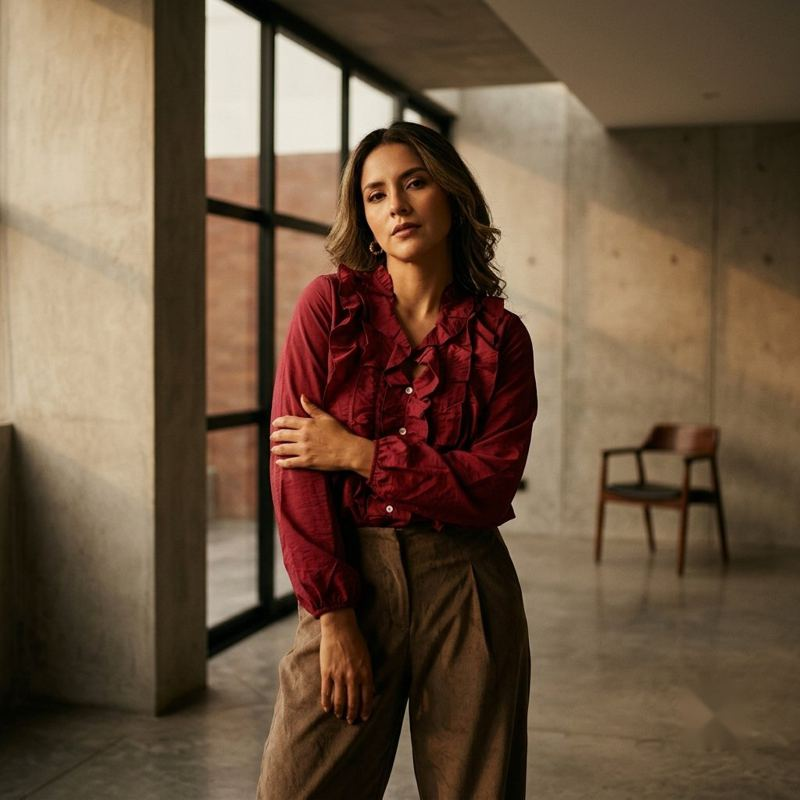
Concreto pulido, madera clara, líneas limpias, ventanales con luz natural. Con personalidad pero elevado — nunca rústico ni artesanal.
Calles, muros, luz de calle — Lima como telón de fondo real.
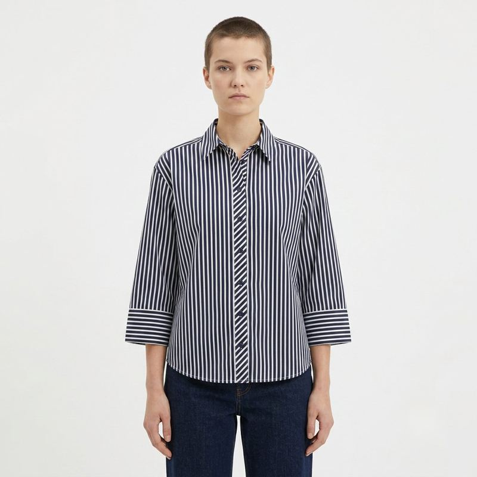
Prohibido en fotografía editorial o de lookbook — le quita el alma editorial a la marca. No aplica a fotografía de producto/ecommerce — ver "Pieza sola" abajo.
Tipos de Toma por PropósitoV1.1 — Updated
Cada necesidad de contenido pide un tipo de toma distinto — no toda foto sirve para todo. Mismo criterio que ya existía, reorganizado en 4 categorías con objetivo y características explícitas.
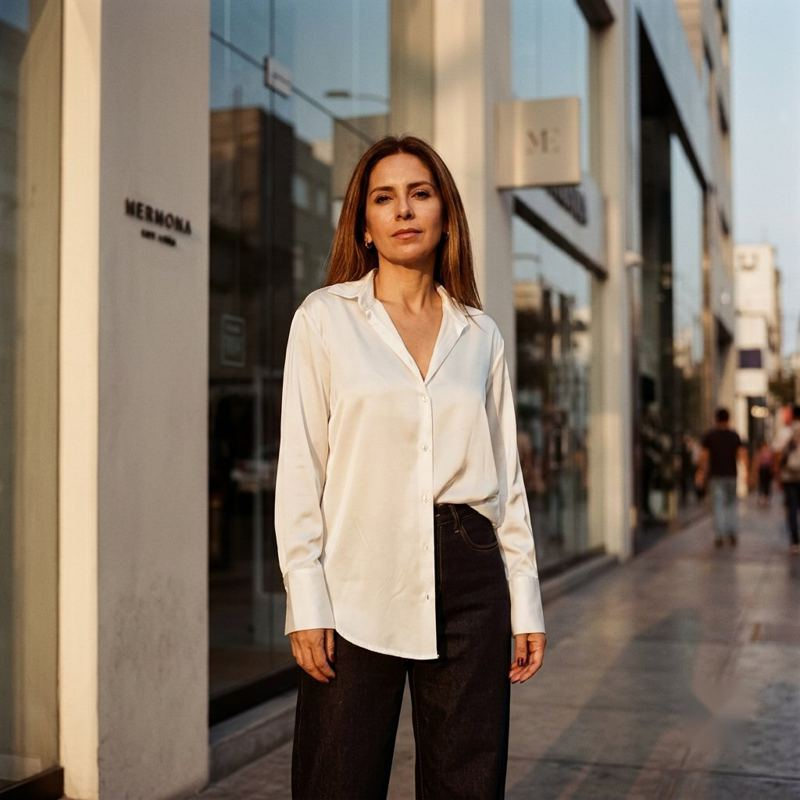
Objetivo: construir deseo y universo de marca. Emocional, contextual, mayor libertad creativa. Úsala en: portada de campaña, feed de Instagram, historia de marca.
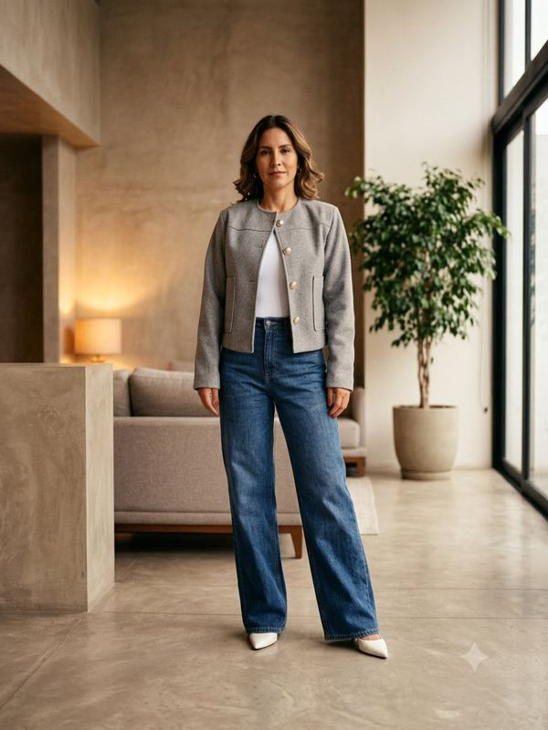
Objetivo: mostrar cómo se ve la colección puesta. Cuerpo completo, styling claro, pose natural, contexto controlado. Úsala en: lanzamiento de colección, carrusel "cómo combinarlo".
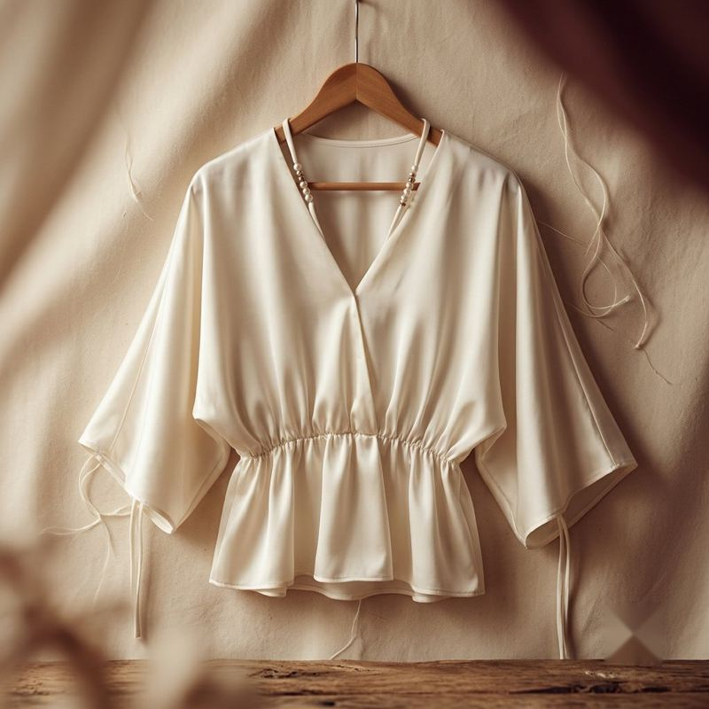
Objetivo: facilitar la decisión de compra. Producto claramente visible, fondo limpio, consistencia, múltiples ángulos, detalle de textura. Úsala en: ficha de producto en Shopify, catálogo de WhatsApp.
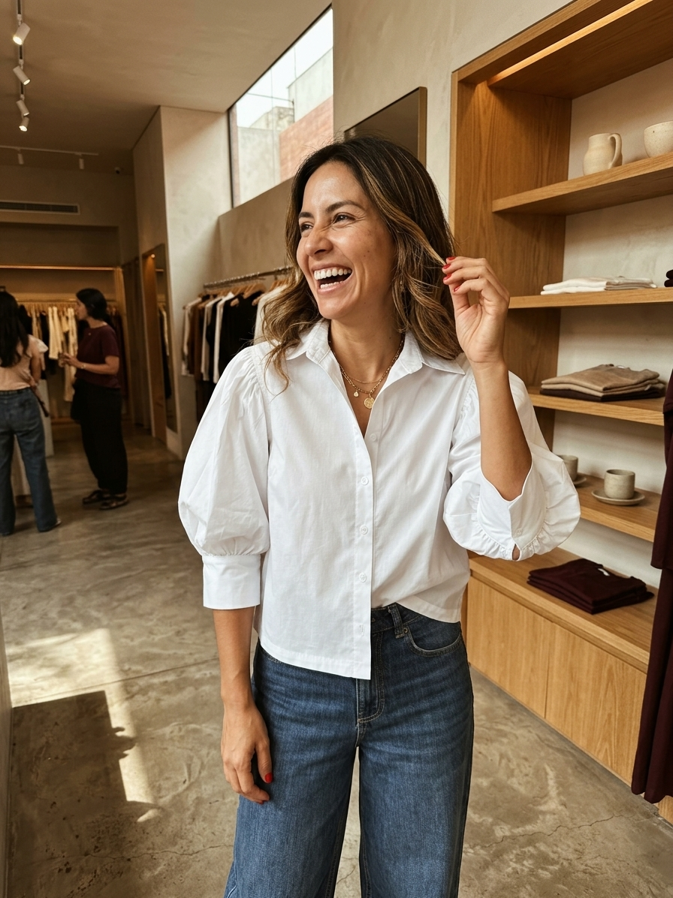
UGC = contenido generado por usuarios (clientas, no un shooting de marca). Objetivo: construir cercanía y autenticidad. Espontáneo, con movimiento, backstage, clientas, tienda, proceso. Úsala en: Stories, Reels de comunidad.
La regla de fondo blanco (evitarlo en Editorial/Lookbook, permitido en Ecommerce cuando mejora la conversión) está detallada más abajo, en "Prohibido".
Reglas de Composición
Iluminación
Cálida y direccional. Las sombras están permitidas — dan carácter, no se corrigen.
Encuadre
Mix de cuerpo entero, ¾ y detalle. Nunca solo un tipo de plano.
Rostro
Visible y expresivo — protagonista, no accesorio de la prenda.
Color grading
Paleta crema-marrón-borgoña. Feed coherente, no editado imagen por imagen.
Autenticidad
La mujer WAY se reconoce en la marca, no en un ideal inalcanzable. Los rasgos reales son parte del estilo, no un defecto a corregir.
Sí ✓
- Piel real, con textura visible
- Rasgos naturales — lunares, arrugas, pecas
- Modelos que representan el rango de edad real (28–65+)
- Mínima post-producción — corrección de color, no de rostro
No ✕
- Retoque que borra textura o "aplana" la piel
- Acabado artificial tipo IA sin corrección
- Filtros que uniforman rasgos entre modelos
- Solo modelos jóvenes — no representa a la clienta real
Prohibido
Estas reglas aplican a fotografía Editorial / Lookbook (retrato de marca, narrativa de marca) — no a fotografía Ecommerce / Producto, que puede usar fondos limpios y neutros cuando mejoran la claridad y la conversión (ver "Ecommerce" arriba).
Aplicaciones de Marca
De la etiqueta bordada a 1.5 cm al feed de Instagram: el sistema La Firma en cada punto de contacto.
way_peruvian
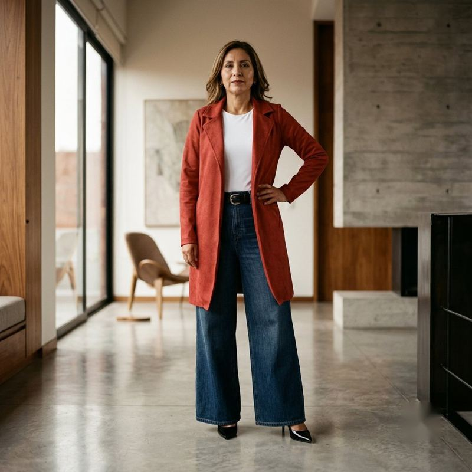
#modaperuana #wayperuvian #nosotras
WAY Peruvian
en línea
10:32
10:33 ✓✓
10:34
10:34 ✓✓
Instagram — Perfil Objetivo
Mismo contenido funcional del perfil actual (@way_peruvian), con el sistema visual de La Firma aplicado al avatar y a las carátulas de highlights — hoy son íconos sueltos sin relación entre sí; aquí comparten un mismo lenguaje: círculo marfil + línea fina, como el monograma.
way_peruvian
📍 Jr. Gamarra 939, tda 118 — Galería Damero
🔗 Visita la página, compra ahora ⬇️
Avatar — recorte circular 110 px · datos de perfil vigentes a la fecha de este documento
Instagram — Grid de Contenido: Antes / Después
Referencia de dirección: @saintmale.cl, el estilo editorial a seguir.
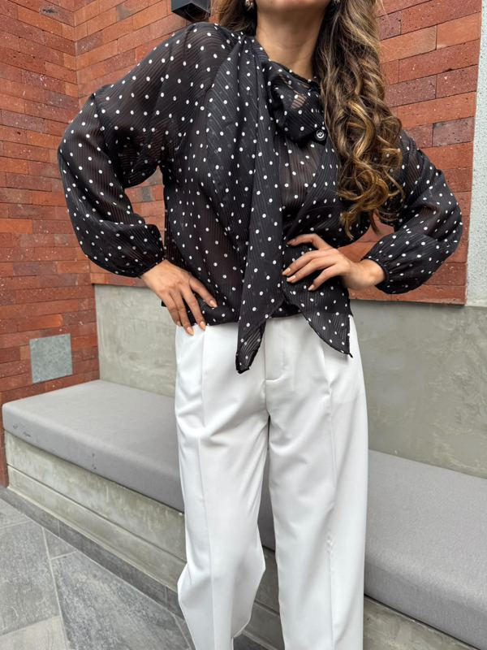
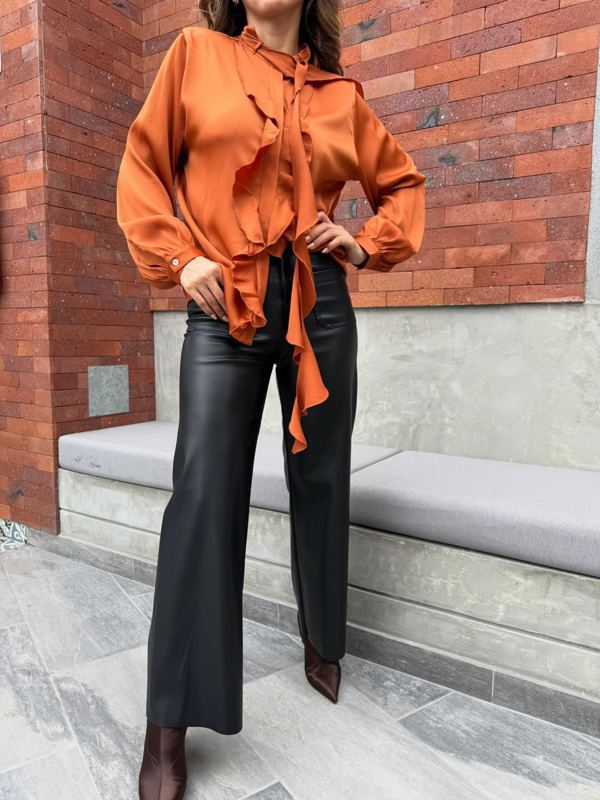
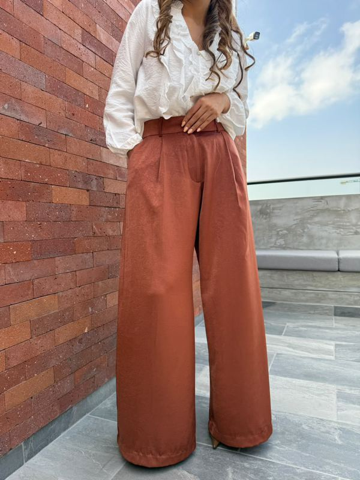
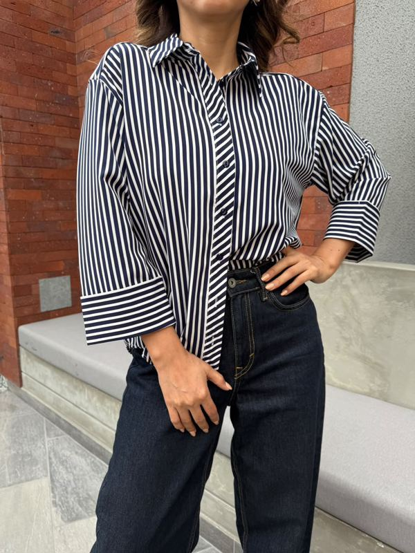
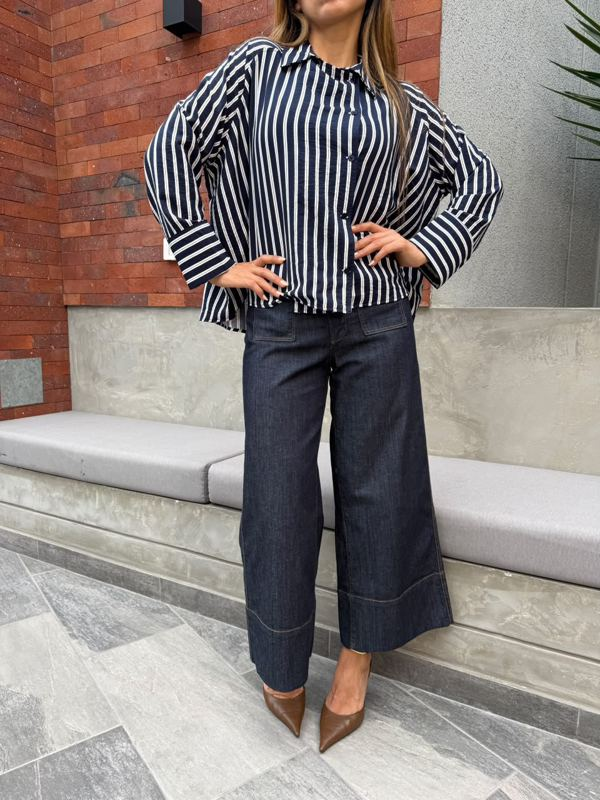
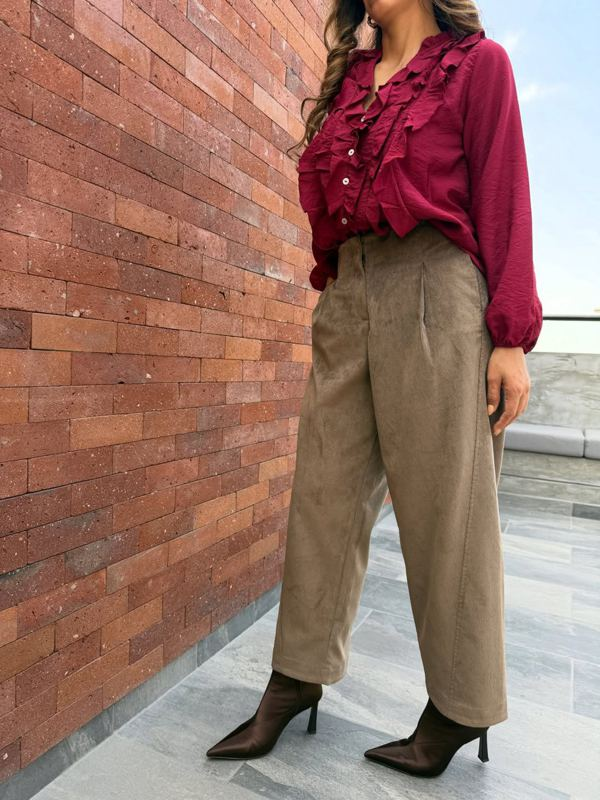
Mismo fondo (pared de ladrillo) en casi toda publicación — sin variedad de encuadre ni tipo de toma. Ver "Prohibido" en la sección 09.
Publicaciones reales del feed actual @way_peruvian
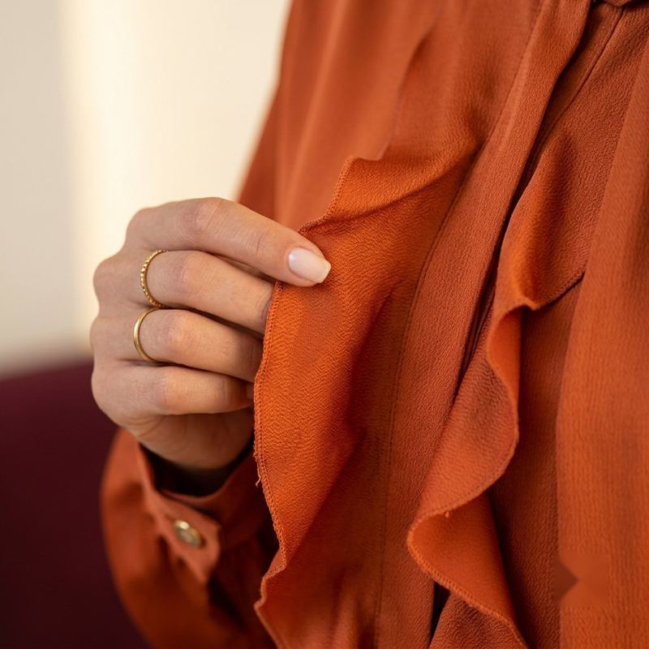
ECOMMERCE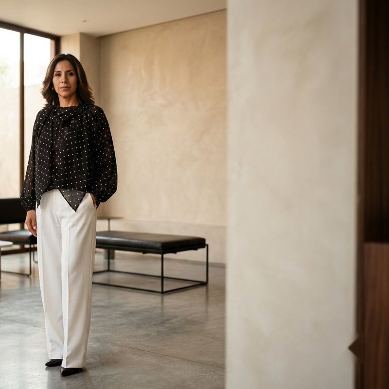
NuevaColección
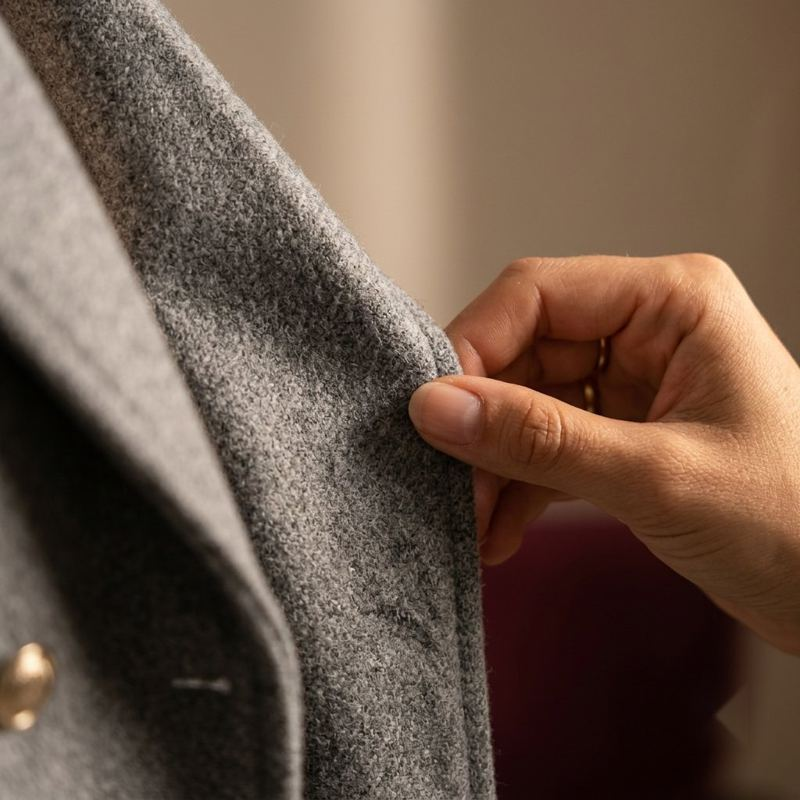
ECOMMERCEMezcla intencional de Editorial / Lookbook / Detalle (ver sección 09) con una pieza promocional ocasional — nunca la misma composición dos veces seguidas.
Imágenes generadas con IA a partir de prendas reales de WAY — concepto de dirección, no fotos de shooting
WhatsApp Business — Perfil
WAY Peruvian
Cuenta de empresa
TikTok — Perfil
Canal activo (@way_peruvian) — mismo sistema visual y bio que Instagram, para que la marca se vea igual en cada plataforma.
way_peruvian
WAY | Ropa de Moda para la mujer empoderada 🤍
Envíos en 24 horas · Lima, Perú
Siguiendo/Seguidores/Me gusta — datos reales del canal a la fecha de este documento. Las reproducciones por video son ilustrativas.
Shopify — Header de Tienda
wayperuvian.pe corre en Shopify — el header es el primer contacto con la identidad en el canal donde ocurre la compra.
Categorías según el catálogo vigente de wayperuvian.pe
Shopify — Tarjeta de Producto y Badges
Donde tipografía, color y fotografía trabajan juntos en el momento de compra. Los tres estados de badge cubren los casos más comunes del catálogo.
Blusa Valentina
S/ 129
Vestido Camila
S/ 159S/ 127
Casaca Antonella
S/ 149
Nombres y precios ilustrativos — a reemplazar por datos reales del catálogo
La Marca en Digital — FundamentosV1.1 — New
Brandbook = cómo debe expresarse la marca en digital. Guía de Ecommerce = cómo se implementa esa expresión en la experiencia de compra. Lo que sigue son principios y patrones de marca — jerarquía, intención visual, relación entre componentes e identidad — no una especificación técnica de componentes. No define hover/focus/error states, breakpoints ni tokens de implementación; eso corresponde a guia-ecommerce.html.
Botones
Tres principios visuales, ya en uso en esta sección — formalizados aquí, no rediseñados.
Principal
Secundario
Texto / Enlace
Jerarquía Tipográfica
Ver tabla completa (H1–CTA) en la sección 07 — Tipografía.
Tarjetas
Dos patrones ya en uso en este documento: Tarjeta de Producto (arriba, con badge e info de compra) y Tarjeta Editorial (.photo-card, ver sección 09 — Fotografía).
Badges
Aplicaciones ya existentes en el catálogo (ver tarjetas arriba): Nuevo · Sale · Agotado
La disponibilidad limitada (lotes pequeños, sin reposición — ver valor de marca "Exclusividad" en la sección 02) puede comunicarse cuando sea real y verificable en el catálogo.
Tono de la Interfaz
La interfaz debe sentirse limpia, cálida, editorial, clara y directa — extensión digital de los atributos operativos de la sección 04 (Cálida, Segura, Contemporánea).
"El branding nunca debe sacrificar claridad comercial ni facilidad de uso."
Fuera de alcance de este documento: checkout, hover/focus/error states, breakpoints, tokens y demás especificaciones de implementación — corresponden a la guía/proyecto de ecommerce, no al brandbook.
Físico — Escala Real
Esta es la prueba real del peso y contraste del logotipo: si se lee bien aquí, a 1.5 cm de bordado, se lee bien en cualquier aplicación más grande.
Empaque y Materiales Físicos
De la bolsa que recibe la clienta al momento de abrir el pedido: cómo se ve el empaque hoy y hacia dónde se dirige bajo La Firma.
Empaque Actual: Antes / Después
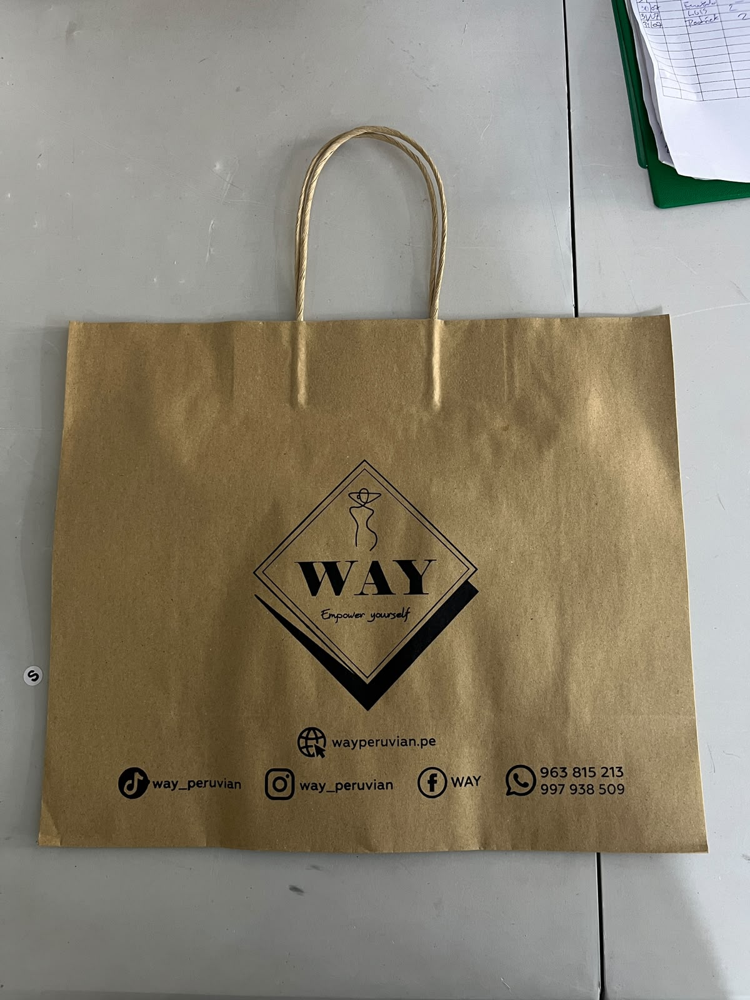
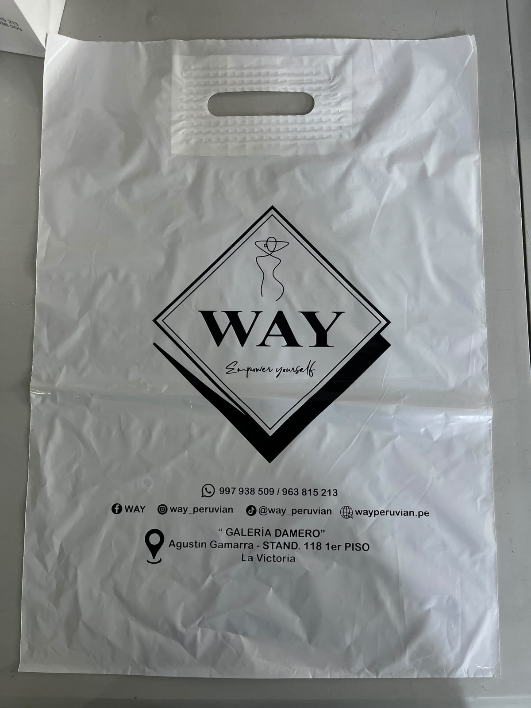
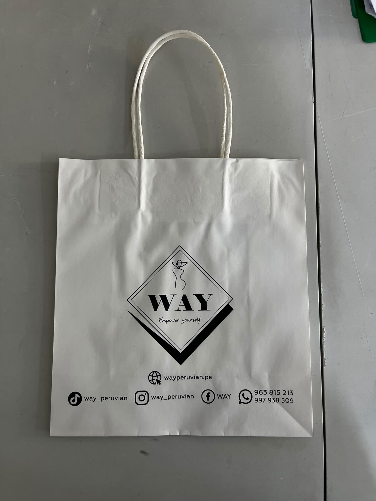
Las tres bolsas comparten la identidad anterior (silueta + rombo, tagline "Empower yourself", @way_peruvian) — la misma familia de logo.webp, no La Firma.
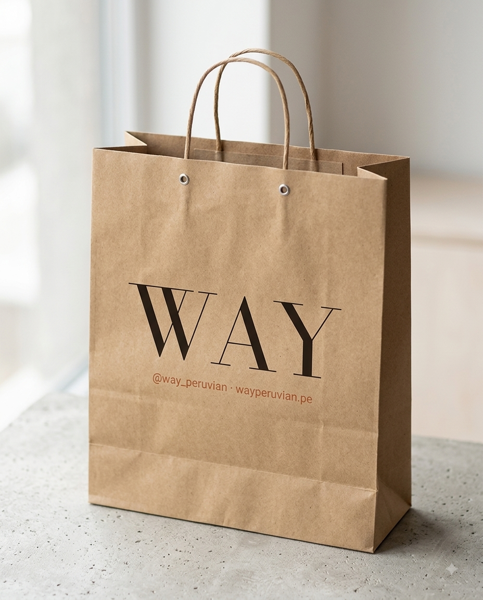
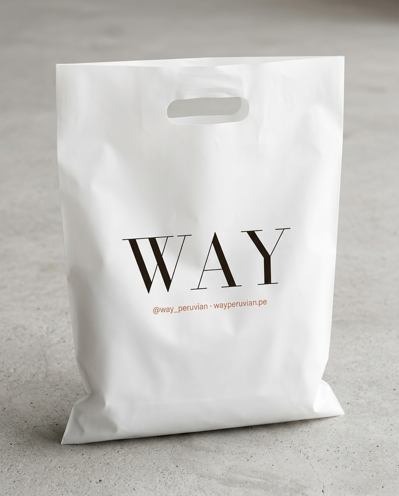
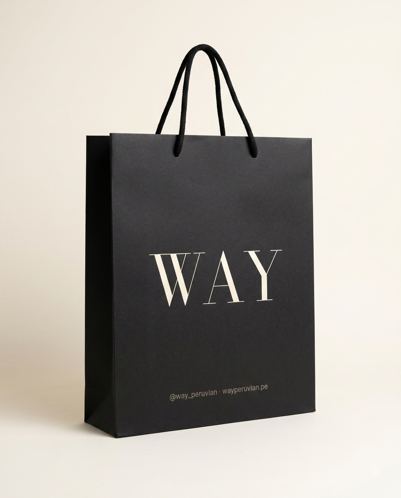
Las dos primeras posiciones son evolución directa de lo que existe hoy: kraft → kraft, plástica → plástica opaca (mismo formato, sin dirección de tienda impresa). La negra mate no reemplaza la bolsa blanca — es una dirección adicional más elevada, sin equivalente en el empaque actual. La blanca no se generó como "Después": kraft y plástica ya cubren la evolución de bajo costo de lo que existe hoy, una tercera opción similar no sumaba una decisión nueva.
Elegir la Bolsa
Referencia rápida para decidir qué formato(s) mantener bajo La Firma — no reemplaza una cotización real de proveedor.
| Formato | Mejor para |
|---|---|
| Kraft | Envíos de ecommerce, uso diario — mismo formato que el empaque actual |
| Plástica opaca | Envíos de ecommerce, protección extra de la prenda — mismo formato que el empaque actual |
| Negra mate (adicional, sin equivalente hoy) | Tienda física, regalo, ocasión especial |
Queda abierto si WAY mantiene varios formatos hacia adelante o consolida a uno solo.
Sistema de Empaque
Sistema completo con concepto de dirección: hang tag y tarjeta como componentes de producción (tipografía y wordmark garantizados, sin depender de que una IA los reinterprete); bolsa en el comparativo de arriba; tissue paper, sticker y caja de envío como conceptos fotográficos con el logo real aplicado.
Gracias por elegirnos ✨
Esperamos que ames tu prenda tanto como nosotras amamos crearla.
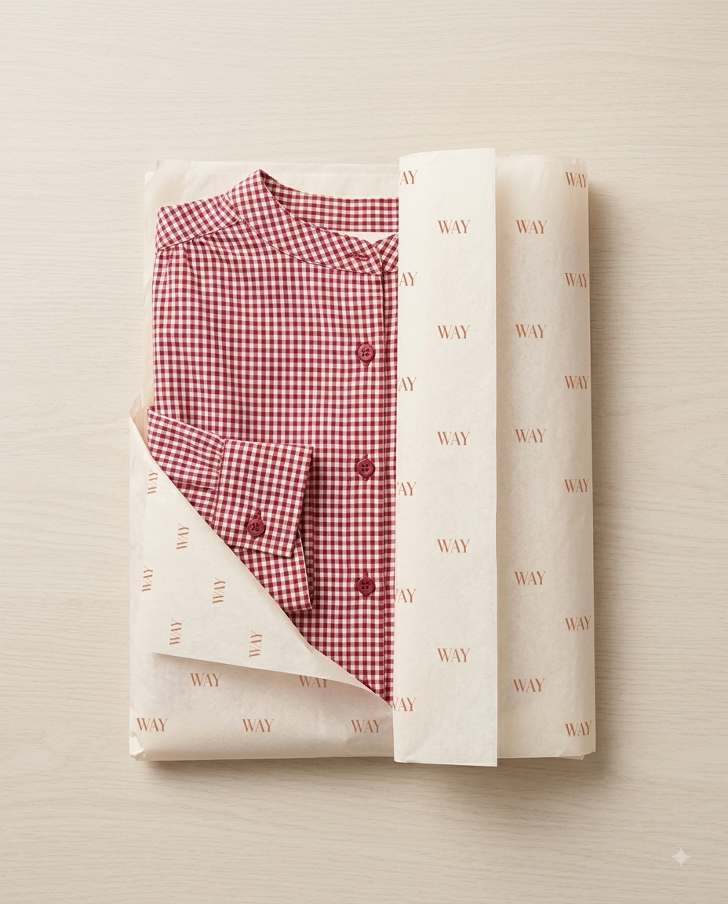
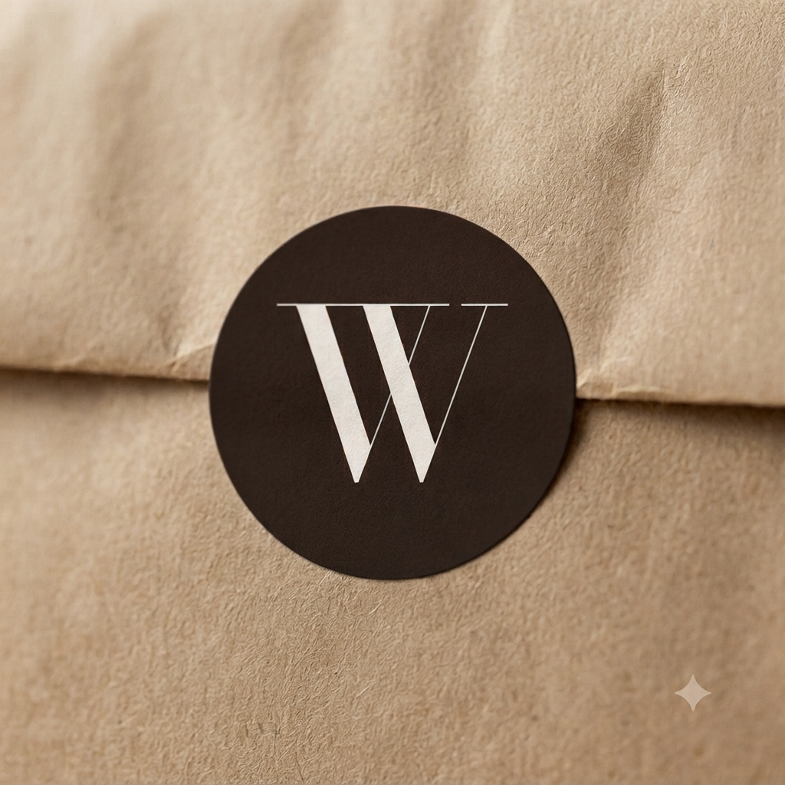
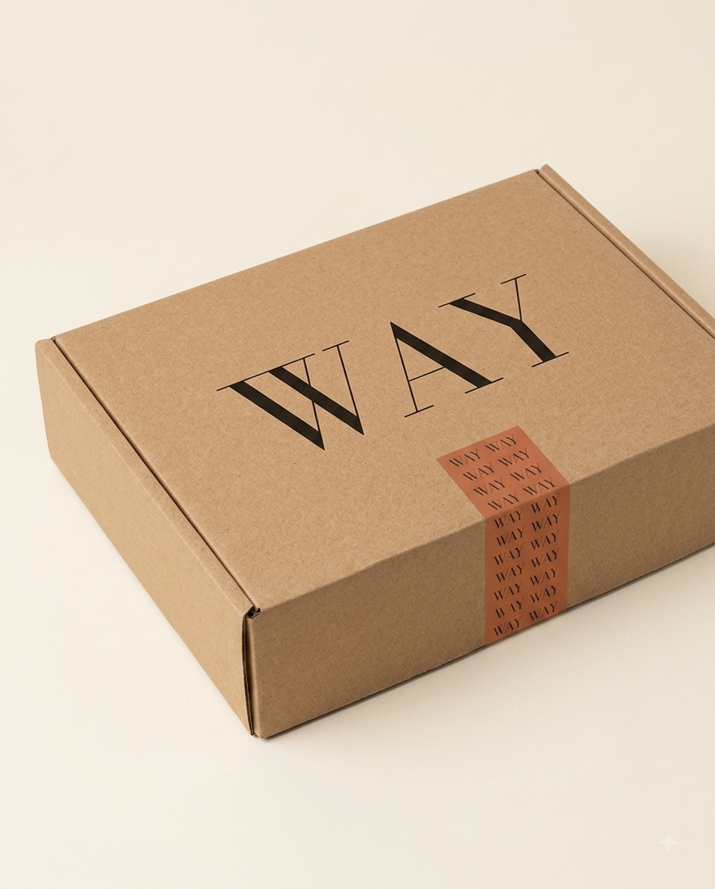
Lineamientos de Producción
A tener en cuenta al diseñar o cotizar cualquier pieza de empaque con un proveedor.
| Color | Marfil #F7F3EE · Casi Negro #2A1F18 · Terracota #C4714A (sección 06 — Sistema de Color). Conversión aproximada a CMYK como punto de partida: Marfil 0/2/4/3 · Casi Negro 0/26/43/84 · Terracota 0/42/62/23. [PENDIENTE — el proveedor debe ajustar estos valores a su perfil de color y sustrato real antes de imprimir] |
| Tipografía | Entregar siempre el wordmark como vector real (assets/logo/), nunca como imagen para calcar o redibujar — es la única forma de garantizar que la tipografía salga exacta. |
| Tamaño mínimo impreso | Mismo principio que en digital (~80px) y bordado (1.5cm): por debajo de cierto ancho el trazo fino del wordmark pierde nitidez. Como referencia de proporción, en los conceptos ya generados (bolsas kraft/negra/plástica) el wordmark ocupa 40–45% del ancho de la bolsa — evitar bajar de ~25%. [PENDIENTE — confirmar el mínimo exacto en papel con el proveedor] |
- ¿El proveedor usa el vector real del logo, no una copia redibujada?
- ¿Los colores están convertidos a CMYK/Pantone, no solo HEX?
- ¿El wordmark impreso está por encima del mínimo legible?
- ¿El costo por unidad es razonable a la cantidad real que se va a comprar de esta pieza?
- ¿Cuántos formatos de bolsa se van a mantener?
Aplicación del Logo en Empaque — Qué Sí / Qué No
| Práctica | Estado | Por qué |
|---|---|---|
| Wordmark entregado como vector real (SVG/AI) | ✓ Correcto | Nunca redibujar ni aproximar la tipografía. |
| Zona de exclusión respetada alrededor del wordmark | ✓ Correcto | Misma regla que en digital y bordado — ver sección Zona de Exclusión. |
| Impresión sobre superficie de bajo contraste (transparente sin fondo, textura muy visible) | ✕ Evitar | El wordmark pierde legibilidad — mismo criterio que "Usos Incorrectos" del logo. |
| Tamaño menor al mínimo legible en impreso | △ Confirmar con proveedor | Aún no tenemos el mínimo exacto en papel — ver Lineamientos de Producción arriba. |
Identidad de marca — Juan Mosquera